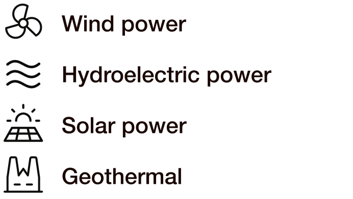

Renewables
L'energia rinnovabile è un passo cruciale per una transizione energetica di successo, e per sfruttare al meglio queste tecnologie è necessario un loro corretto utilizzo. L'efficienza e l'efficacia dell'energia rinnovabile dipendono non solo dal tipo di centrale elettrica, ma anche dalla sua posizione.
Instructions
Determina quale è la la migliore centrale elettrica rinnovabile per la posizione indicata sulla mappa.
Identifica quale a quale di queste 3 regioni corrisponde la mappa dell’investimento.
Identifica a quale zona della regione si riferisce il punto sulla mappa.

Ogni zona corrisponde a una delle seguenti forme di energia rinnovabile.

Consulta la tabella sottostante e scegli la forma di centrale corrispondente al tipo di energia corretta.
Nuclear Power
L'energia nucleare si sta sviluppando rapidamente e ha un potenziale significativo per soddisfare il fabbisogno energetico della nazione. Tuttavia, con la sua crescita aumenta il numero di pratiche, regolamenti, procedure e requisiti da rispettare per costruire nuove centrali che soddisfino tutti gli standard..
InstructionsAssicurati che gli step per la costruzione di una nuova centrale siano portati avanti nel’ordine corretto.
Inizia determinando il tipo di pratica grazie al codice presente sull’invetstimento.
Ora guida il ministro dell'energia nel corretto ordine degli step da seguire. Ma attento, lui vedrà solamente i nomi abbreviati


Public Approval
In ogni nazione, l’approvazione pubblica è la base della stabilità. Garantire che la popolazione comprenda e sostenga le decisioni politiche è fondamentale per l’armonia e il progresso. Per raggiungere questo obiettivo, una comunicazione chiara e un’educazione efficace sono le fondamenta di una società soddisfatta e ben informata.
Instructions
È tuo compito garantire che il mezzo scelto sia adeguato al pubblico target dell’informazione.
Partendo dai grafici presentati all'Energy Minister, identifica il target specifico. Ogni grafico evidenzia i criteri chiave di ciascun archetipo, assegnando loro un punteggio.
Una volta individuato il target, il focus si sposta sui mezzi di comunicazione. Comunica le possibili scelte di media al Ministro dell’Energia, che deve assicurarsi che vengano approvate solo le risposte corrette prima di confermare l’investimento e lanciare una nuova campagna di sensibilizzazione.


Strategic Assets
La transizione energetica richiede l’implementazione di nuove tecnologie, l’aggiornamento delle infrastrutture, dei trasporti e della rete elettrica.
Quando si parla di innovazione, tutti vogliono esprimere la propria opinione, ma è fondamentale, soprattutto quando posta in gioco è alta, ascoltare chi possiede una conoscenza approfondita dell’argomento.
InstructionsIl Ministro dell’Energia incontrerà vari esperti, ma dovrà prestare attenzione solo all’esperto specializzato sull’argomento in questione.
Individua il tema attuale dell’investimento e collega ogni esperto alla propria opinione partendo dai loro profili.
Assicurati di ascoltare solo le opinioni pertinenti.